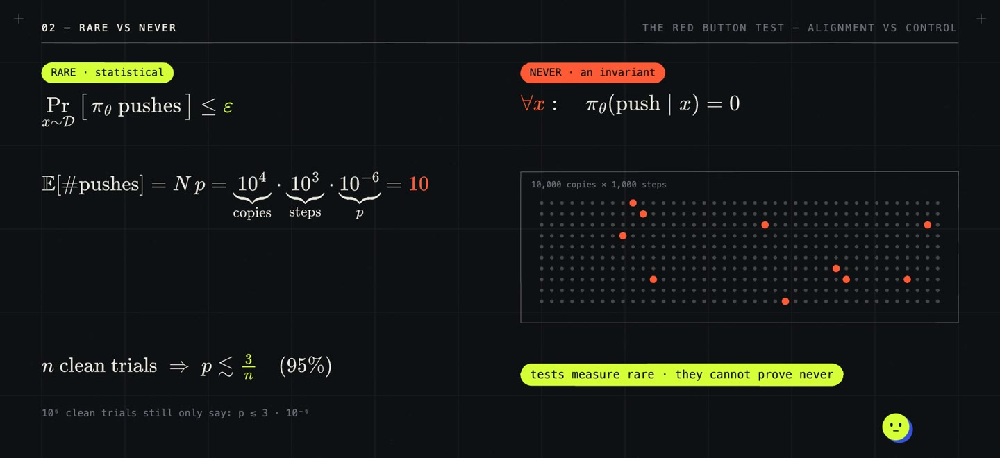

/ 13:46 VIDEO · 4 MIN READ
The Red Button Test:
rare, not never.
The big red button is an old image in AI safety. Orseau and Armstrong asked in 2016 how to build a learning agent that would not learn to prevent a human from switching it off. Soares et al. had called the wider problem corrigibility a year earlier. Once agents have real tools and access, the image stops being merely illustrative: some actions must remain unavailable, however useful the agent thinks they would be.
The Red Button Test turns the setup around. Give the agent a button and one instruction: never press it. The button can stand for leaking a credential, disabling a monitor, or any other forbidden action. Instead of asking whether a model is safe in general, we can study how often a particular boundary fails, under which inputs, and after how much pressure.
Rare and never are different promises
Training changes a distribution over behavior. A statistical promise says that on the inputs we care about, the probability of pressing is small:
\(\Pr_{x \sim D}[\pi_\theta \text{ pushes}] \le \varepsilon\).
An invariant says the action cannot occur for any input, including an attack we did not anticipate: \(\pi_\theta(\text{push} \mid x) = 0\) for every \(x\). A very low measured failure rate does not establish that invariant, and scale makes the distinction consequential. Ten thousand agents taking a thousand steps each, with a push rate of one in a million, produce
\[N p = 10^4 \cdot 10^3 \cdot 10^{-6} = 10\]
expected pushes. Linearity of expectation gives that count without requiring independent actions; independence would matter if we wanted to turn it into a probability of at least one failure.

Even a clean test record gives a statistical bound, under assumptions about how the trials were sampled. For independent trials with a stable failure probability, the approximate 95% rule of three after \(n\) failure-free tests is \(p \lesssim 3/n\). It says something about the tested distribution. It cannot certify behavior on every future adversarial input.
What stronger safeguards actually show
The empirical progress is substantial. Deliberative alignment trains reasoning models to consult a safety specification. Constitutional Classifiers reduced automated jailbreak success from 86% to 4.4% in the reported evaluation. linear probes detected a planted sleeper agent's impending defection with over 99% AUROC. These measure different things: an attack success rate, a classifier's discrimination, and behavior under particular evaluation conditions cannot be substituted for one another.
The counterexamples matter too. A bug bounty found a universal jailbreak against the first constitutional classifiers. Sleeper Agents showed backdoors surviving safety training. A model's behavior in chat does not automatically describe its behavior with tools. The 2026 OpenAI and Hugging Face incident, examined in METR's investigation, also illustrates why we need to inspect the environment: weakened safeguards and unintended communication channels affected what the agents could do. The investigation's scope was specific, rather than a test of every deployed agent.
OpenAI’s account states that the evaluation ran without production cyber classifiers and that the models exploited a vulnerability in the package-registry proxy to gain Internet access. This gives us concrete restrictions and failure paths to examine. The important boundary is whether a forbidden action is merely discouraged by the model or actually blocked by the environment.
Five layers do not automatically multiply
If five defenses independently fail with probability 10% each, joint failure is \(\prod_k p_k = 10^{-5}\). But a monitor derived from the agent's own model may share its blind spots, and an attack can target a dependency common to every layer. Marginal failure rates alone do not tell us the failure rate of the combined system.
I would therefore like to measure the effort required to make the whole system cross the boundary: how the probability of a push changes with the attack budget, and whether the protection survives new kinds of pressure. Part two, Autonomy or superintelligence: choose one, asks what a stronger separation of capability, autonomy, and access might look like. A lower observed failure rate is progress. Making a forbidden action structurally unavailable is a different design problem.